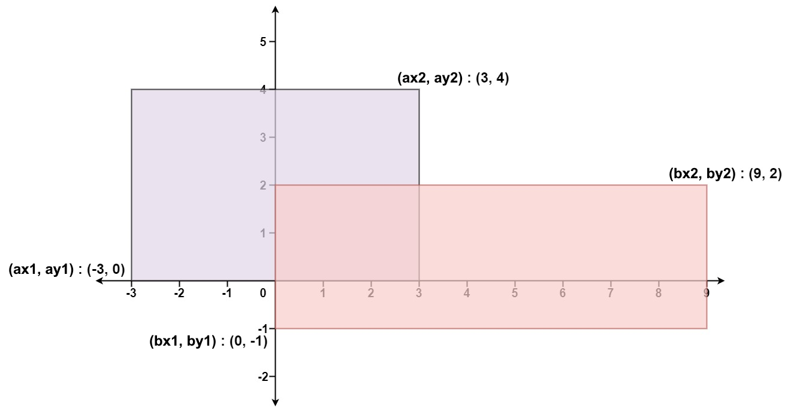

223. 矩形面积
面积 = A + B − 交集；交集宽 = min(右端) − max(左端)，高同理，差值为负就取 0。
思路
areaA、areaB各自算，坐标差最大 2e4，乘积先转long保险。- 横向交集宽
w = min(ax2, bx2) − max(ax1, bx1)：不相交时是负数，max(0, ·)截成 0。 - 纵向同理得
h；重叠部分被加了两遍，答案 =areaA + areaB − w*h。 - 退化输入（宽度或高度为 0 的线段）面积自然为 0，公式不用特判。
图解
最优解
1class Solution {2 public int computeArea(int ax1, int ay1, int ax2, int ay2, int bx1, int by1, int bx2, int by2) {3 // 两个矩形各自的面积（坐标差最大 2e4，乘积用 long 保险）4 long areaA = (long) (ax2 - ax1) * (ay2 - ay1);5 long areaB = (long) (bx2 - bx1) * (by2 - by1);6 // 交集宽：右端取 min、左端取 max；不相交时差值为负，截成 07 long w = Math.max(0L, Math.min(ax2, bx2) - Math.max(ax1, bx1));8 long h = Math.max(0L, Math.min(ay2, by2) - Math.max(ay1, by1));9 // 重叠部分被加了两遍，减掉一次10 return (int) (areaA + areaB - w * h);11 }12}题目
给你 二维 平面上两个 由直线构成且边与坐标轴平行/垂直 的矩形，请你计算并返回两个矩形覆盖的总面积。
每个矩形由其 左下 顶点和 右上 顶点坐标表示：
- 第一个矩形由其左下顶点
(ax1, ay1)和右上顶点(ax2, ay2)定义。 - 第二个矩形由其左下顶点
(bx1, by1)和右上顶点(bx2, by2)定义。
示例 1：

输入：ax1 = -3, ay1 = 0, ax2 = 3, ay2 = 4, bx1 = 0, by1 = -1, bx2 = 9, by2 = 2 输出：45
示例 2：
输入：ax1 = -2, ay1 = -2, ax2 = 2, ay2 = 2, bx1 = -2, by1 = -2, bx2 = 2, by2 = 2 输出：16
提示：
-104 <= ax1 <= ax2 <= 104-104 <= ay1 <= ay2 <= 104-104 <= bx1 <= bx2 <= 104-104 <= by1 <= by2 <= 104
题面取自力扣当前版本。
数据快照 2026-11-04。题面版权归力扣所有，本站点仅供本人学习使用，请勿对外发布。